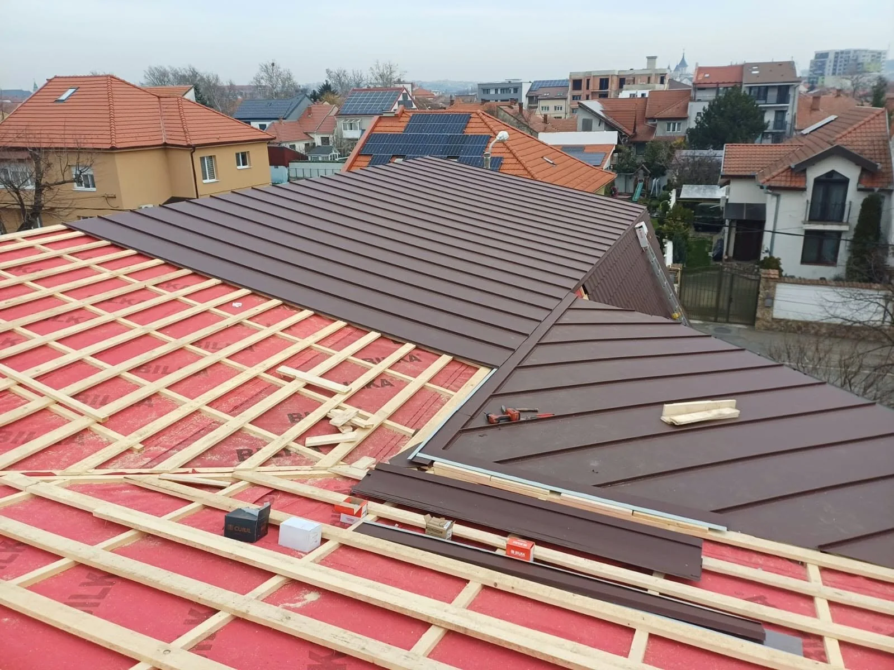
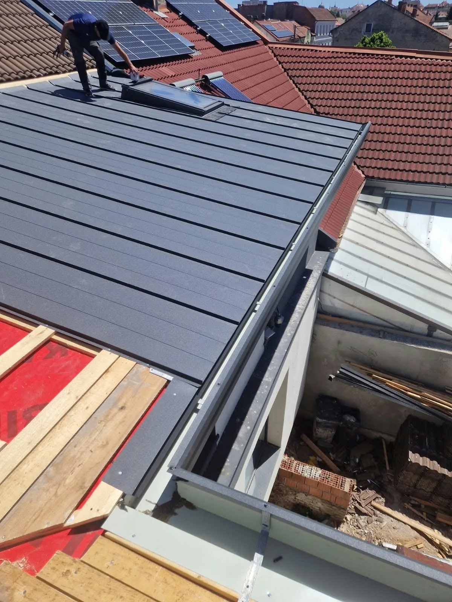

SERVICII · ORADEA
Dulgherie și șarpante în Oradea
Lucrările de dulgherie pregătesc structura și suportul acoperișului pentru învelitoarea aleasă.
Firma este din Oradea, Bihor. Disponibilitatea în alte localități se confirmă separat.

CUM ABORDĂM LUCRAREA
O lucrare pregătită cu atenție.
Pașii exacți depind de configurația acoperișului, materialele alese și situația de la fața locului.
- 01
Discutăm particularitățile structurii.
- 02
Pregătim elementele de suport în funcție de acoperiș.
- 03
Urmărim detaliile necesare montajului învelitorii.
FOTOGRAFII DIN ARHIVĂ
Detalii din lucrări reale.


Fotografiile reprezintă etape de pregătire și montaj, nu documentația completă a unei șarpante.
Vezi toate fotografiile ↗Ai o lucrare în plan?
Descrie proiectul și localitatea. Formularul pregătește mesajul, dar nu îl expediază automat.